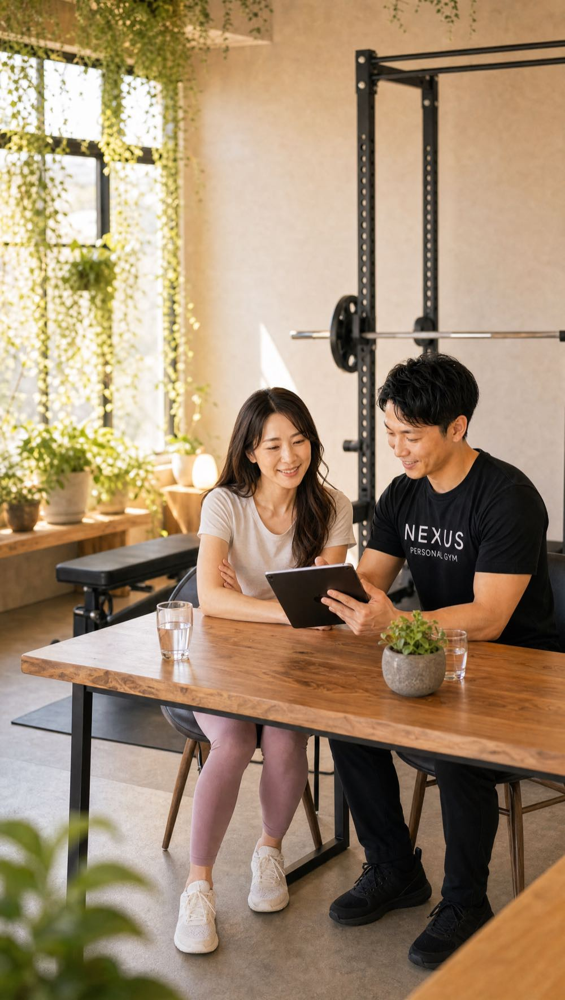
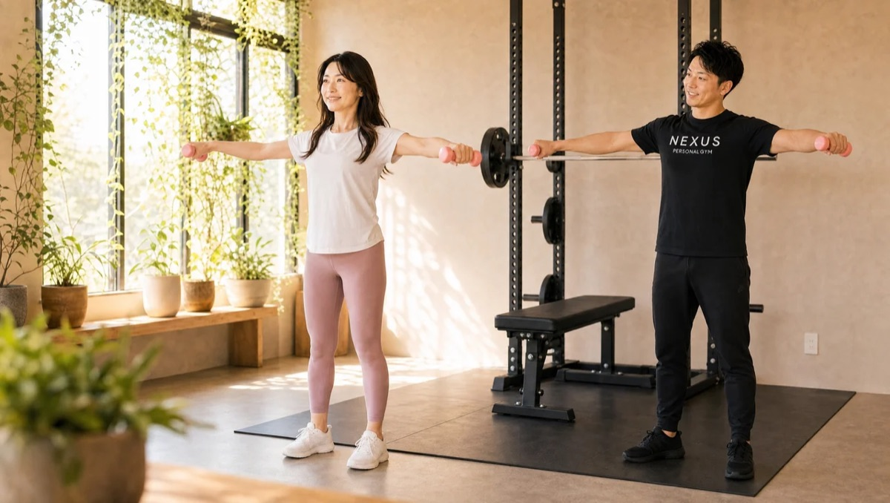
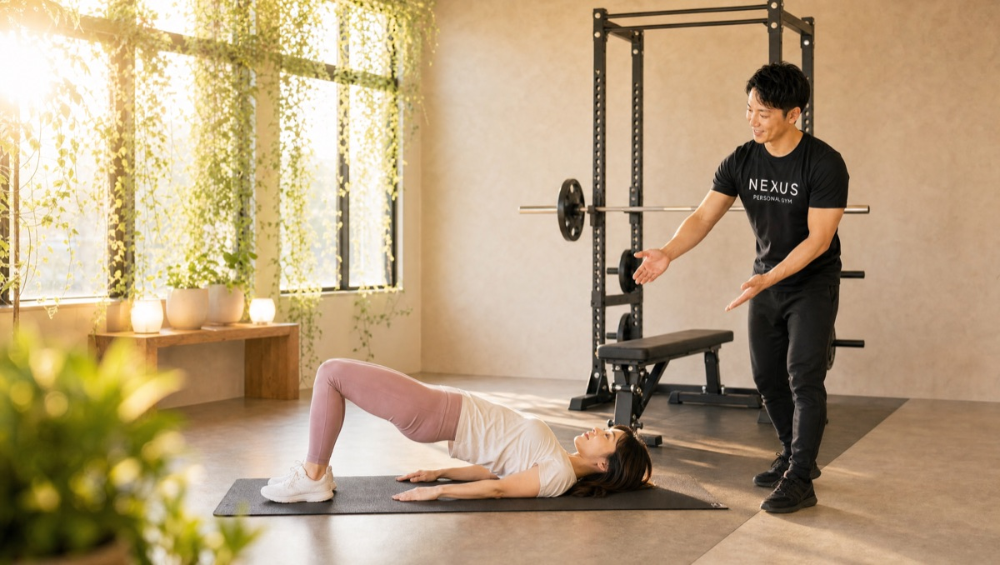
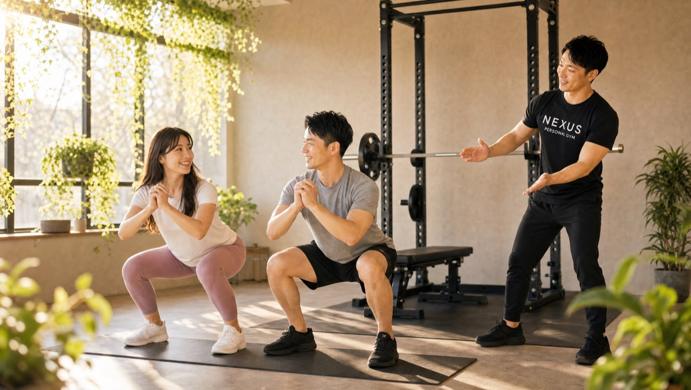

NEXUS Personal Gym ／ 神奈川県横浜市
NEXUSパーソナルジム 大口店｜大口の完全個室・隠れ家ジム
JR横浜線・大口駅が最寄り。横浜市の住宅街のマンションの一室にある、大きな看板のない隠れ家パーソナルジムです。女性会員85%、運動初心者の30〜40代女性がこっそり通っています。
- 完全個室
- 手ぶら通いOK
- 女性会員85%
- 運動初心者歓迎
- AI食事指導

この店舗の特徴
NEXUS大口店は、神奈川県横浜市の落ち着いた住宅街に佇む完全個室のパーソナルジム。大きな看板を出していないため、大口・子安・神奈川区・白楽エリアで「人目を気にせず綺麗になりたい」という30〜40代女性に選ばれています。ウェア・タオル・プロテインまで無料提供の手ぶら通いOKで、忙しい毎日でもバッグひとつで続けられます。
オープンしたばかりの今だけの通いやすさ

大口店は2026年6月にオープンしたばかりの新店舗です。オープン直後の今だからこそのメリットがあります。まず、希望の曜日・時間帯の予約がとても取りやすいこと。会員が増える前の今なら、朝いちばんや仕事帰りの人気枠も選びやすく、担当トレーナーとじっくり関係を築けます。「一期生」として、身体づくりをゼロから設計できるこのタイミングは、オープン直後だけの特別な時期です。
マンツーマンだから最短で変わる

大口店は完全個室のマンツーマン指導。トレーナーがあなたの身体のクセや関節の動きを見ながら、一回ごとにフォームを微調整します。自己流の運動では効きにくい部位も、正しいフォームなら狙った筋肉にしっかり刺激が入る。だから遠回りせず、最短で身体が変わっていきます。運動が初めての方でも、その場で「効いている感覚」がつかめます。
下半身から変えるボディメイク

「下半身が気になる」という声は、30〜40代女性でとても多いお悩み。大口店では、ヒップリフトをはじめとした下半身種目で、お尻・太もも・脚のラインを重点的に整えます。下半身は身体の中でも大きな筋肉が集まる部位。ここを鍛えると見た目の印象が変わるだけでなく、基礎代謝が上がって痩せやすい身体づくりにもつながります。
2人ならさらに通いやすく

「一人だと続くか不安」という方には、セミパーソナルがおすすめ。60分・月2回11,000円（税込・1回5,500円）で、近所のご友人やご家族と2人で通えます。お互いが“通う理由”になり、励まし合いながら続けられるので継続率がぐっと上がります。大口・子安エリアにお住まいの気の合う相手と、一緒にはじめてみてください。
料金プラン
入会金は通常55,000円、無料体験当日入会で15,000円（税込）に割引。全店舗共通の料金です。
アクセス
- 店舗名
- NEXUSパーソナルジム 大口店
- 住所
- 〒221-0002
神奈川県横浜市神奈川区大口通137-9 第一山内ビル201 - 最寄り駅
- JR横浜線 大口駅
- 営業時間
- 8:00〜22:00
- 電話番号
- 050-1790-8499
大口店はまだ口コミがありません。だからNEXUSの実績でお伝えします
大口店は2026年6月オープンのため、まだGoogle口コミが集まっていません。かわりに、同じ教育プログラムで運営されるNEXUS系列店の実績をご紹介します。NEXUSは全国約70店舗。近隣の系列店では、以下の評価をいただいています（2026年7月時点）。
- 練馬店（系列店）★5.0（95件）
- 乃木坂・赤坂店（系列店）★5.0（102件）
- 新中野店（系列店）★4.9（91件）
- NEXUS全店の会員継続率96%
※上記は大口店ではなくNEXUS系列店の評価です。大口店にも、同じ3ヶ月の自社教育プログラムを修了したトレーナーが在籍します。
大口店のよくある質問
Q大口店はどこにありますか？最寄り駅は？+
Q大口・子安エリアで初心者向けのパーソナルジムを探しています。+
Q大口・子安で完全個室のパーソナルジムはありますか？+
Q大口店の営業時間は？仕事帰りでも通えますか？+
Q大口店の予約はどうやって取りますか？+
Q大口・子安周辺で女性が通いやすいジムを探しています。+
Q大口店はいつオープンしましたか？+
Q新しい店舗ですが、トレーナーの質は大丈夫ですか？+
Q大口駅周辺にパーソナルジムは他にありますか？+
よくある質問（全店共通）
料金・制度などNEXUS全店に共通するご質問です。さらに詳しくは110問のFAQをご覧ください。
Q料金はいくらですか？+
Q手ぶらで通えますか？+
Qキャンセルはいつまでできますか？+
Q食事指導はありますか？+
Qトレーナーはどんな人ですか？+
Q女性会員は多いですか？+
Q体験の流れは？+
NEXUSパーソナルジムの特徴・料金をもっと見る